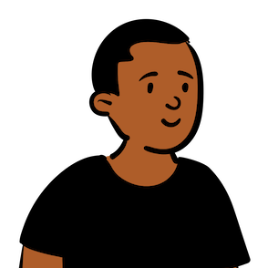

<!DOCTYPE html>
<html lang="en">
<head>
    <base target="_top">
    <meta charset="utf-8">
    <meta name="viewport" content="width=device-width, initial-scale=1">
    
    <title>Distrik Kota Jayapura</title>
    
    <link rel="shortcut icon" type="image/x-icon" href="docs/images/favicon.ico" />

    <link rel="stylesheet" href="https://unpkg.com/leaflet@1.9.4/dist/leaflet.css" integrity="sha256-p4NxAoJBhIIN+hmNHrzRCf9tD/miZyoHS5obTRR9BMY=" crossorigin=""/>
    <script src="https://unpkg.com/leaflet@1.9.4/dist/leaflet.js" integrity="sha256-20nQCchB9co0qIjJZRGuk2/Z9VM+kNiyxNV1lvTlZBo=" crossorigin=""></script>

    <style>
        .map {
            height: 100vh;
            width: 100%;
        }
    </style>
</head>
<body>

<div id='map' class="map"></div>

<script type="text/javascript" src="assets/geojson/abepura.js"></script>
<script type="text/javascript" src="assets/geojson/muaratami.js"></script>
<script type="text/javascript" src="assets/geojson/jayapurautara.js"></script>
<script type="text/javascript" src="assets/geojson/jayapuraselatan.js"></script>
<script type="text/javascript" src="assets/geojson/heram.js"></script>
<script type="text/javascript">

const map = L.map('map').setView({lat: -2.53371, lng: 140.71813}, 11);

map.createPane('labels');
map.getPane('labels').style.zIndex = 650;
map.getPane('labels').style.pointerEvents = 'none';

const cartodbAttribution = '&copy; <a href="https://www.openstreetmap.org/copyright">OpenStreetMap</a> contributors, &copy; <a href="https://carto.com/attribution">CARTO</a>';

const positron = L.tileLayer('https://{s}.tile.openstreetmap.org/{z}/{x}/{y}.png', {
    attribution: cartodbAttribution
}).addTo(map);

const positronLabels = L.tileLayer('http://{s}.basemaps.cartocdn.com/light_only_labels/{z}/{x}/{y}.png', {
    attribution: cartodbAttribution,
    pane: 'labels'
}).addTo(map);

const districtLayers = {
    "Abepura": L.geoJson(geoAbepura, {
        style: {color: "#ff0000", fillColor: "#ff0000", fillOpacity: 1.0},
        onEachFeature: (feature, layer) => layer.bindPopup(feature.properties.nama)
    }).addTo(map),
    "Muara Tami": L.geoJson(geoMuaratami, {
        style: {color: "#eed959", fillColor: "#eed959", fillOpacity: 1.0},
        onEachFeature: (feature, layer) => layer.bindPopup(feature.properties.nama)
    }).addTo(map),
    "Jayapura Utara": L.geoJson(geoJayapurautara, {
        style: {color: "#00ff00", fillColor: "#00ff00", fillOpacity: 1.0},
        onEachFeature: (feature, layer) => layer.bindPopup(feature.properties.nama)
    }).addTo(map),
    "Jayapura Selatan": L.geoJson(geoJayapuraselatan, {
        style: {color: "#ffff00", fillColor: "#ffff00", fillOpacity: 1.0},
        onEachFeature: (feature, layer) => layer.bindPopup(feature.properties.nama)
    }).addTo(map),
    "Heram": L.geoJson(geoHeram, {
        style: {color: "#0000ff", fillColor: "#0000ff", fillOpacity: 1.0},
        onEachFeature: (feature, layer) => layer.bindPopup(feature.properties.nama)
    }).addTo(map)
};

L.control.layers(null, districtLayers,{collapsed: false}).addTo(map);

const sapu = L.layerGroup().addTo(map);
const babat = L.layerGroup().addTo(map);

const icons = {
    "sapu": L.icon({iconUrl: 'assets/img/pin-home-green.png', iconSize: [25, 41], iconAnchor: [12, 41], popupAnchor: [1, -34]}),
    "babat": L.icon({iconUrl: 'assets/img/babat.png', iconSize: [25, 41], iconAnchor: [12, 41], popupAnchor: [1, -34]}),
};

const sapuMarkers = {
    "Vim": L.marker([-2.595713, 140.6597402], {icon: icons.sapu}).bindPopup('<b>Sapu Vim</b><br><br>Nama: John Doe<br>Keterangan: Penyapu Jalan').addTo(sapu),
    "Wahno": L.marker([-2.593637, 140.6688757], {icon: icons.sapu}).bindPopup('<b>Sapu Wahno</b><br><br>Nama: Jane Doe<br>Keterangan: Penyapu Taman').addTo(sapu),
};

const babatMarkers = {
    "Muaratami": L.marker([-2.60000, 140.66667], {icon: icons.babat}).bindPopup('<b>Babat MuaraTami</b><br><br>Nama: Samuel Bosawer').addTo(babat),
    "Jayapura Selatan": L.marker([-2.53371, 140.71813], {icon: icons.babat}).bindPopup('<b>Babat Jayapura Selatan</b><br><br>Nama: Obi Pranata').addTo(babat),
};

L.control.layers(null, {"Sapu": sapu, "Babat": babat}, {collapsed: false}).addTo(map);

</script>
</body>
</html>
